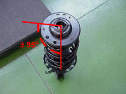

4410AE CHECK ON CORRECT POSITIONING OF SPRING/SHOCK ABSORBER ASSEMBLY
- Path
- Test > 44 SUSPENSION AND WHEELS > 4410 FRONT SUSPENSION > 4410A FRONT DAMPERS AND SPRINGS > 4410AE CHECK ON CORRECT POSITIONING OF SPRING/SHOCK ABSORBER ASSEMBLY
- Kind
- test / check procedure
- Applies to
- all engines; all production periods
- Interactive page
- https://sloeber94.github.io/elrnDB-fCrm/en/#/194002282
Applies to: all engines; all production periods
Check that the semicorner (spring - shock absorber assembly) is correctly positioned checking that the opening in the mounting is correctly positioned in relation to the shock absorber brackets.
The positioning tolerance is ±95° as illustrated in the diagram.
